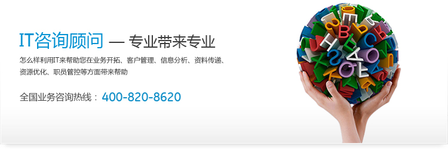

克林顿说：“美国的强大主要是科技的力量，没有IT的发展，哪有我们的支配地位。”
去年《哈佛商业评论》的一篇文章《当IT的战略优势已成往事》曾经引起了广泛的关注。这篇文章指出：当IT成为企业的基础性设施后，它正成为如同铁路、电力一样的大众化商品，这时企业以IT为基础所获得的优势就将失去。这篇文章认为：“随着信息技术大众化的趋势的继续，铺张浪费所带来的惩罚只会加重。要想以信息技术投资来获得竞争优势越来越难，而招致成本劣势倒是容易得多”。
的确，在企业和它的竞争对手都已经引进了信息系统后，双方的力量对比又回到了平衡点。但是这时双方肯定会开始新一轮的竞争。就像足球赛中如果双方打成了1：1时，任何一方的心情都不会比0：0时更轻松，而是更加紧张了。和足球比赛所不同的是，信息化是一场没有时间限制的竞赛。企业面临的问题不是余下的时间内如何比赛，而是在今后究竟怎样做才能继续保持竞争优势。从这个基本观点出发，重新审视企业目前的信息化现状和企业经营环境，做好企业信息化的规划，从企业发展的战略角度思考如何进一步创造价值，就是那些已经成功地实施了信息系统的企业的当务之急。
CIO的三个基本视点
所谓信息化规划的视角，就是从什么角度去看待企业信息化的现状和规划未来的发展。企业信息化规划应当避免单纯技术观点，从企业战略的角度出发考虑IT的发展。CIO如果缺乏对于企业战略的清晰了解，就不可能做出适合于企业发展的信息化规划。其次，CIO必须了解企业环境的变化。企业的经营环境、技术环境、竞争环境等都在不断变化，在企业信息化规划的修订中必须敏锐地反映出这些变化。最后，CIO必须能够正确地客观地评估自己企业的信息化现状，懂得企业信息化目前的状况与理想状态的差距。
CIO在企业信息化规划中，可以基于以下三个基本视点来考虑企业信息系统整体的发展和进步：
◆ 结构的观点
信息系统的结构应当根据企业经营环境的变化而不断调整。根据企业的发展和新业务的产生，一定会产生新的应用需求，这时当然要修改和删除旧的模块，添加新的模块。此时，系统的结构很容易被破坏。但必须始终注意保持企业信息系统的整体架构相对稳定。系统的结构调整一定要记录下来，以免在多次变化之后，系统的架构完全被破坏了。
◆ 整体的观点
信息系统的调整总是从系统的部分功能开始的。因此，部分结构的改变是必然的。职能部门中的功能调整有时带来了局部的效益，但可能对全局效益却是不利的。信息化规划应当明确这一点，努力使局部效益和整体效益结合起来考虑，不要因追求局部利益而破坏信息系统整体结构的完整性和统一性。
◆ 内部和外部的观点
随着信息化的发展，企业和外部的边界越来越模糊，商业合作伙伴、供应商等都可能与企业形成价值链。应当注意这个趋势，将这种发展体现在信息化规划中。
在实践中的四项注意
在实践中，信息化规划应当分为长期规划和短期规划两种形式。长期的规划应当包括5年左右的企业信息化发展计划，应根据企业的发展和新技术的出现不断修正；而短期规划则应当是每年都要做。应当由CIO以及专门的团队负责做这项工作，高层领导也必须亲自过问。另外，还有一些值得注意的事项，CIO可以据此检查一下自己的信息化规划是否成功。
◆ 清晰的企业信息化发展愿景
为企业信息化制定一个清晰的未来发展愿景和目标非常重要。有的企业尽管有很厚的信息化资料，可是没有清晰的愿景。另外，如果CIO不能在很短的时间内讲清楚未来企业信息化的发展方向，也不能用明确的语言将企业信息化的愿景目标描述出来，就很难得到企业高层的支持。在这种情况下，企业信息化规划就可能是纸上谈兵。
◆说明信息化的价值所在
在信息化规划中一定会涉及到信息化继续投资的问题。因此CIO必须要能够说明为什么要继续投资，这种投资将给企业带来什么效益。如果企业的CIO不能用业务人员所能理解的方式说明信息化的价值所在，信息化就会被看作是一个不断投入资金的成本中心。应当懂得：业务人员和IT人员对于价值的理解和衡量方法往往是不同的。因此，必须找到一个双方都能够接受的衡量信息化价值的机制。
◆ 体现出IT管理体制的不断完善
企业信息化规划不但要有硬件、网络、技术的规划，同样重要的是对IT管理机制的发展规划。例如，对于信息安全制度的建立，信息沟通体系的完善等。信息化发展中经常要对各种IT项目进行分析，确定这些项目的优先顺序，分配有限的IT资源。作为这种分配的基础，CIO必须能够建立起一套成熟的IT管理机制。
在一些企业中，为了体现IT的价值和有效的管理，已经实现了内部有偿服务的结算制度。将信息技术部门的服务设计成不同的服务级别，并且设置了衡量这些服务水平的标准。这些标准能够清楚的定义在超过或达不到相应目标时的奖励和惩罚。
◆ 培养员工的信息技能和意识
企业信息化包括许多和人力资源有关的方面。不仅包括传统的培训，薪资，绩效反馈和职业发展机会等，还包括培养新的组织文化和制度。在企业经营的动态环境中，企业能否给自己员工设计了很好的职业发展道路？他们的职业发展和IT是否紧密地结合起来了？员工个人是否具有很好的信息系统工作技能？IT部门员工是否有对企业业务提供良好服务的责任感？员工是否意识到信息资源和知识积累对于企业发展的重要性？个人和企业是否能够很好地从经验中学习？这些都是和企业的信息系统发展息息相关的
|